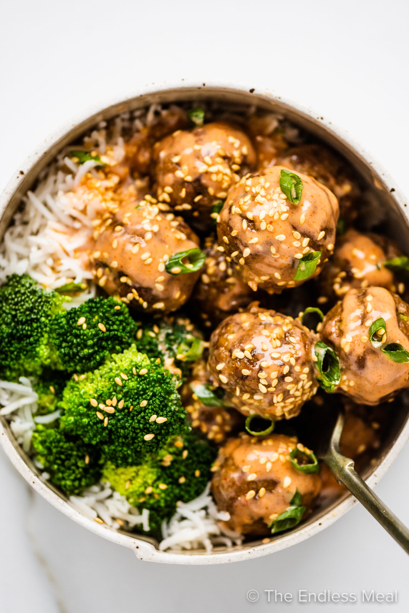

Home
Firecracker Meatballs

Description
Meatballs dipped in Firecracker sauce made of mayonnaise, honey, sriracha, sour cream, and soy sauce.
The dish we include a side of green beans and jasmine rice.
Ingredients
- 2 Scallions
- 2 tbsp Mayonnaise
- 2 tsp Honey
- 1 tsp Sriracha
- 10 oz Ground Beef
- 6 oz Green Beans
- 1 Thumb Ginger
- 2 tbsp Sour Cream
- 2 tbsp Soy Sauce
- 1/2 cup Jasmine Rice
- 1/4 Cup Panko Breadcrumbs (contains: Wheat)
- 1 tsp Korean Chili Flakes
Instructions
-
Adjust rack to to position (middle and top positions for 4 servings) and preheat oven
to 425 degrees. Wash and dry all produce.
Trim and thinly slice scallions, separating whites from greens; mince whites. Peel
and mince ginger.
-
In a large bowl, combine mayonnaise, sour cream, honey, 2 tsp soy sauce (4 tsp for 4 servings),
and sriracha to taste. (You'll use the rest of the soy sauce later.) Set aside.
-
In a small pot, combine rice, 3/4 cup water (1 1/2 cups for 4 servings), and a big pinch of salt.
Bring to a boil, then cover and reduce to a low simmer. Cook until rice is tender, 15-18 minutes.
Keep covered off heat until ready to serve.
-
While rice cooks, in a second large bowl, combine beef*, panko, scallion whites, ginger, remaining soy sauce,
salt (we used 1/2 tsp), and pepper. (Use 1 tsp salt for 4 servings.)
Form into 10-12 (20-24 for 4) 1 1/2-inch meatballs.
-
Place meatballs on one side of a lightly oiled baking sheet.
Toss green beans on empty side with a drizzle of oil, salt, and pepper.
(For 4 servings, divide between 2 sheets; roast meatballs on middle rack and
green beans on top rack.)
Roast on top rack until meatballs are cooked through and green beans are browned and tender. 14-16 minutes.
-
Fluff rice with a fork; season with salt and pepper. Divide between bowls or plates. Carefully add
meatballs to bowl with sauce; toss to coat. Top rice woth meatballs and drizzle with any remaining sauce.
Serve green beans to the side. Garnish with scallion greens and chili flakes to taste.